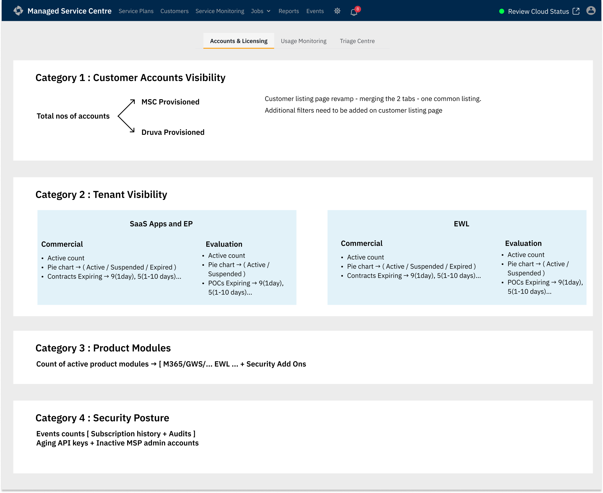
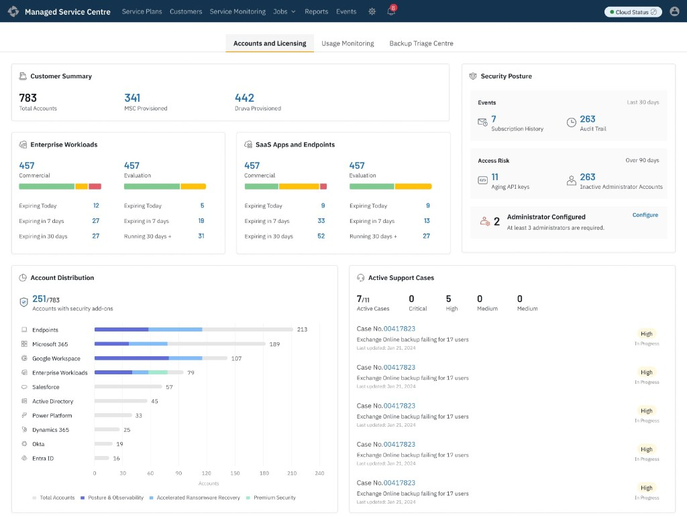
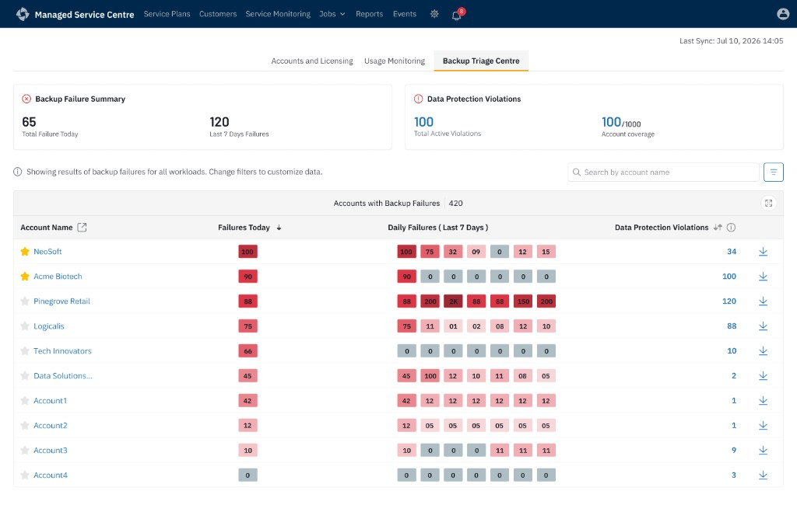

This is the operational dashboard MSPs use to manage backups across all their customers from one screen. My job was to figure out what an admin needs to see first — and what can wait — then structure the dashboard around those priorities.
Research question: what does an MSP admin need to see first, and what can wait?
MSPs were checking each customer account individually to spot backup failures, storage spikes, expiring licenses, and security risks. The existing home screen tried to serve every job at once — and failed at all of them.
I grounded this work in three inputs:
Scoped out of this phase: The full Limited-Admin role view was specced in research but not designed this round — the three-tab structure for Full Admin took priority for launch. Limited Admin sees only assigned customers and cannot access the Security widget; that filtered view remains on the roadmap.
Before opening Figma, I mapped every piece of information the system generated into a master tree — then checked it against how admins actually described their day.
These didn't cluster cleanly — the same screen was asked to serve a 30-second triage check and a 90-day trend analysis.

Putting every metric on a visual map forced hard conversations early. I reviewed this map with internal Customer Success teams to ensure I wasn't missing blind spots. It stopped subjective arguments about "how a chart should look" and forced debate about "does the user actually need this number?"
Reviewing the map against how admins actually described their day surfaced four distinct workflows, each operating on a different timeline:
After two failed high-fidelity passes, I stepped back. The five-category map made the answer obvious: account work, consumption monitoring, and failure triage operate on different timelines — they needed separate tabs, not one scroll.

I paused layout exploration here and reviewed the concepts against the four workflows identified earlier. One pattern kept surfacing: every layout forced unrelated jobs into the same visual hierarchy. If I stacked everything, an admin checking expirations had to scroll past massive storage charts.
I moved into high-fidelity design to see how real data would feel. Running these full screens past engineering and PMs made the friction between different administrative tasks impossible to ignore.

My first attempt put Usage Charts, Licensing States, Account Lifecycles, and Active Tickets together on a single screen.
How I knew it failed: Stakeholder and engineering reviews — licensing widgets kept getting skipped because storage charts dominated the page. Checked against the four workflows: immediate triage and weekly planning couldn't coexist on one screen.
I cleaned up the layout by grouping Account Summaries, Workloads, and Security neatly at the top.
How I knew it failed: The top half worked for account management, but usage analysis is a dedicated job. Heavy Usage charts at the bottom felt out of place — checked against the four workflows and confirmed consumption monitoring needed its own surface.After the failed high-fidelity passes, I stepped back. Instead of charts and filters, I rebuilt the dashboard as five plain category blocks—each answering one question, with no decorative UI noise.

Reviewing this layout against the four daily workflows made the next decision obvious. These five categories did not belong on one scroll. Account and licensing work (Categories 1–3), consumption monitoring (Category 5), and security auditing (Category 4) operate on different timelines and mental modes.
That review is what led directly to the three-tab structure—each tab inheriting the categories that share the same job-to-be-done.
Customer Accounts, Tenant Visibility, Product Modules, Security Posture, and active Support Cases.
Usage trends, quota alerts, and storage consumption (Category 5).
Immediate failure triage—the morning workflow that needed its own room.
The five-category map became three dedicated tabs. Each one inherited only the blocks that belong to the same operational question—no more scrolling past unrelated charts to reach the job you came for.
QUESTION: WHICH CUSTOMERS NEED COMMERCIAL ATTENTION TODAY?


QUESTION: WHICH TENANTS ARE CONSUMING RESOURCES ABNORMALLY?

Per-product numbers live inside the hover tooltip rather than as separate cards. It keeps the chart scannable, but it means an admin can't compare two products side by side without moving the mouse twice. Acceptable for spotting the one line that moved—wrong if the job ever shifts to detailed comparison.
QUESTION: WHICH CUSTOMER BACKUPS REQUIRE ATTENTION THIS MORNING?

Validation is defined, not yet measured. The design is complete and moving into development. I checked each tab against the four daily workflows in stakeholder review with PMs and engineers — no quantitative tracking is live yet, and I'd rather name that than invent a number.
Post-launch I'd track: time-to-triage a failed backup (morning workflow), and missed license expirations (weekly planning workflow).
Restructured a single overloaded screen into three job-focused surfaces — Accounts & Licensing, Usage Monitoring, and Backup Triage — each aligned to a distinct admin workflow identified in research.
Tabs solve crowding but scatter context — if a client has a broken backup, an expiring plan, and a quota warning at once, that information lives on three tabs. Per-product numbers live inside hover tooltips rather than separate cards — scannable for spotting one line that moved, wrong for side-by-side comparison. I accepted both tradeoffs consciously.